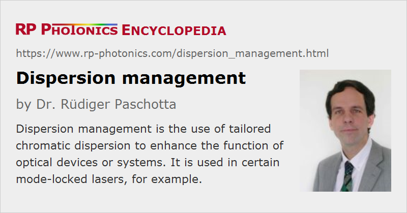

Dispersion Management
Definition: the use of tailored chromatic dispersion to enhance the function of optical devices or systems
German: Dispersions-Management
Categories: lasers, lightwave communications, light pulses, methods
How to cite the article; suggest additional literature
Author: Dr. Rüdiger Paschotta
Dispersion management is a somewhat wider term than dispersion compensation, even though both are often used in the same way. Strictly, dispersion compensation should be understood as a method for canceling the chromatic dispersion of some optical element(s), whereas dispersion management is more generally the use of tailored dispersion properties in order to enhance some function.
Examples of dispersion management in different situations are:
- In a mode-locked laser operating at a wavelength around 1 μm or shorter, the intracavity optical elements often contribute normal chromatic dispersion. For optimum pulse generation, it is often beneficial to overcompensate the normal chromatic dispersion in order to utilize the regime of anomalous dispersion, where soliton effects can help to obtain shorter pulses (→ soliton mode locking), which may also have a higher pulse quality e.g. in terms of weak pedestals and high stability. If the wanted pulse duration is in the regime of tens of femtoseconds or less, it is usually also necessary to compensate carefully the higher-order dispersion, i.e., to control the group delay dispersion over a significant optical bandwidth.
- In a mode-locked fiber laser, dispersive and nonlinear effects can become so strong that the pulse parameters (including the pulse duration and chirp) vary significantly during each resonator round trip. With a suitable combination of fibers exhibiting normal and anomalous dispersion, a stretched-pulse fiber laser can be realized, which can generate pulses (dispersion-managed solitons) with significantly higher pulse energy than with, e.g., soliton mode locking.
- Similar effects can be used in optical fiber communications: a fiber-optic link consisting of a periodic arrangement of fibers with normal and anomalous dispersion can help to suppress nonlinear effects such as channel cross-talk via four-wave mixing. It is possible to suppress the Gordon–Haus timing jitter at the same time, if the average chromatic dispersion is zero.
Suppliers
The RP Photonics Buyer's Guide contains 6 suppliers for dispersion management devices. Among them:
Questions and Comments from Users
Here you can submit questions and comments. As far as they get accepted by the author, they will appear above this paragraph together with the author’s answer. The author will decide on acceptance based on certain criteria. Essentially, the issue must be of sufficiently broad interest.
Please do not enter personal data here; we would otherwise delete it soon. (See also our privacy declaration.) If you wish to receive personal feedback or consultancy from the author, please contact him e.g. via e-mail.
By submitting the information, you give your consent to the potential publication of your inputs on our website according to our rules. (If you later retract your consent, we will delete those inputs.) As your inputs are first reviewed by the author, they may be published with some delay.
Bibliography
| [1] | M. Nakazawa and H. Kuboto, “Optical soliton communication in a positively and negatively dispersion-allocated optical fibre transmission line”, Electron. Lett. 31, 216 (1995), doi:10.1049/el:19950159 |
| [2] | N. J. Smith et al., “Enhanced power solitons in optical fibres with periodic dispersion management”, Electron. Lett. 32, 54 (1996), doi:10.1049/el:19960062 |
| [3] | T. Yu et al., “Dispersion-managed soliton interactions in optical fibers”, Opt. Lett. 22 (11), 793 (1997), doi:10.1364/OL.22.000793 |
| [4] | A. Hasegawa et al., “Recent progress in dispersion-managed soliton transmission technologies”, Opt. Fiber Technol. 3 (3), 197 (1997), doi:10.1006/ofte.1997.0227 |
| [5] | V. S. Grigoryan and C. R. Menyuk, “Dispersion-managed solitons at normal average dispersion”, Opt. Lett. 23 (8), 609 (1998), doi:10.1364/OL.23.000609 |
| [6] | S. K. Turitsyn, “Breathing self-similar dynamics and oscillatory tails of the chirped dispersion-managed soliton”, Phys. Rev. E 58 (2), R1256 (1998), doi:10.1103/PhysRevE.58.R1256 |
| [7] | Y. Chen et al., “Dispersion-managed mode locking”, J. Opt. Soc. Am. B 16 (11), 1999 (1999), doi:10.1364/JOSAB.16.001999 |
| [8] | A. Berntson and B. A. Malomed, “Dispersion management with filtering”, Opt. Lett. 24 (8), 507 (1999), doi:10.1364/OL.24.000507 |
| [9] | L. F. Mollenauer et al., “Demonstration of massive wavelength-division multiplexing over transoceanic distances by use of dispersion-managed solitons”, Opt. Lett. 25 (10), 704 (2000), doi:10.1364/OL.25.000704 |
| [10] | R. Ganapathy et al., “Soliton interaction under soliton dispersion management”, IEEE J. Quantum Electron. 44 (4), 383 (2008), doi:10.1109/JQE.2007.914778 |
See also: dispersion, chromatic dispersion, dispersion compensation, optical fiber communications
and other articles in the categories lasers, lightwave communications, light pulses, methods
|  |
If you like this page, please share the link with your friends and colleagues, e.g. via social media:
These sharing buttons are implemented in a privacy-friendly way!